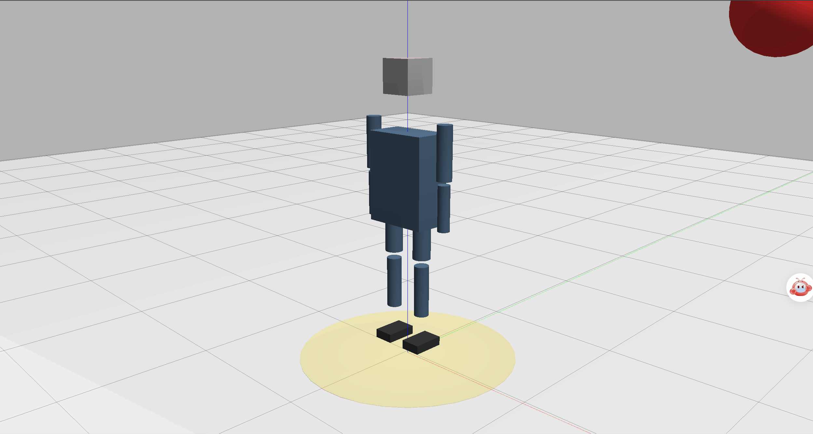

人形机器人 3D 碰撞体边界检测可视化 ROS 2 封装模块
作业概述与背景
本模块实现基于 ROS 2 的 3D 人形机器人碰撞体边界检测可视化。节点为简化人形机器人注册 12 个碰撞体（头、躯干、左右上臂、左右前臂、左右大腿、左右小腿、左右足），以球体作为障碍物，在每个控制周期实时计算障碍物到所有碰撞体的最短表面距离，并输出最近距离、碰撞标志与可视化 MarkerArray。RViz2 中可同时观察到半透明碰撞体包围盒、线框边界与距离指示，用于直观判断机器人本体与障碍物之间的空间关系。
模块附带一个正弦轨迹的障碍物演示节点，可独立验证检测链路，无需外部仿真环境。
运行环境
- 操作系统：Ubuntu 22.04（虚拟机）
- ROS 2 版本：Humble
- 依赖库：rclcpp、std_msgs、geometry_msgs、visualization_msgs、eigen
核心代码文件清单
本模块包含以下核心文件，均已提交至仓库：
src/
└── humanoid_collision_detector/
├── include/
│ └── humanoid_collision_detector/
│ └── collision_detector.hpp # 碰撞体与检测结果数据结构、检测器类声明
├── humanoid_collision_detector/
│ ├── collision_detector_core.cpp # 距离计算核心（BOX / SPHERE / CYLINDER）
│ ├── collision_detector_node.cpp # 检测节点：碰撞体注册、话题收发、Marker 生成
│ └── obstacle_demo_node.cpp # 正弦轨迹障碍物演示节点
├── launch/
│ └── main_launch.py # 一键启动文件
├── rviz/
│ └── collision_boundary.rviz # RViz2 可视化配置
├── resource/ # 资源目录
│ └── humanoid_collision_detector # 无后缀空文件
├── CMakeLists.txt # 构建配置
├── package.xml # ROS 2 依赖声明文件
└── README.md # 模块说明文档
检测原理
- 碰撞体建模。 每个人形部件用 BOX 或 CYLINDER 基元近似，位置与尺寸均以 z 轴为高度方向。
- 距离计算。 计算障碍物球面到 BOX/CYLINDER 外接盒表面的最小间隙（基础距离非负），再减去障碍物半径得到带正负含义的最近距离，球体与碰撞体几何重叠时结果为负。
- 风险分级。 依据安全边界
safety_boundary与距离阈值，把结果分为 safe、warning、danger、collided 四级。仅当最近距离 小于 0（障碍物球体与碰撞体几何重叠）时，collision_detected置为true，风险等级记为 collided；若0 ≤ 最近距离 < safety_boundary，风险等级记为 danger，但碰撞标志仍为 false。 - 可视化。 最近碰撞体以高亮色显示，其余碰撞体以半透明青色显示，并绘制边界线框与距离指示线；距离指示线连接障碍物中心与最近碰撞体表面的最近点。
运行步骤
- 新建标准工作空间并进入 src 目录：
mkdir -p ~/ros2_ws/src
cd ~/ros2_ws/src
- 从 ros2 仓库拷贝模块代码到工作空间：
cp -r ~/ros2/src/humanoid_collision_detector ~/ros2_ws/src/
cd ~/ros2_ws
- 安装依赖并编译工作空间、部署环境：
rosdep install --from-paths src --ignore-src -r -y
colcon build --packages-select humanoid_collision_detector
source install/setup.bash
- 启动碰撞体边界检测节点与障碍物演示节点：
ros2 launch humanoid_collision_detector main_launch.py
- 另开终端查看实时检测结果：
source install/setup.bash
ros2 topic echo /distance_to_obstacle
ros2 topic echo /collision_detected
- 可选：打开 RViz2 查看碰撞体边界可视化：
ros2 run rviz2 rviz2 -d install/humanoid_collision_detector/share/humanoid_collision_detector/rviz/collision_boundary.rviz
Fixed Frame 设为 world，MarkerArray 话题选择 /collision_boundary。
话题与参数
| 话题 | 类型 | 说明 |
|---|---|---|
/obstacle_position |
geometry_msgs/msg/PointStamped |
障碍物世界坐标（输入，可被外部节点覆盖） |
/distance_to_obstacle |
std_msgs/msg/Float64 |
最近碰撞体到障碍物的表面距离（m） |
/collision_detected |
std_msgs/msg/Bool |
是否发生几何碰撞（min_distance < 0 时为 true；0 ≤ d < safety_boundary 时 risk_level=2 但 collision_detected=false） |
/collision_boundary |
visualization_msgs/msg/MarkerArray |
碰撞体与安全边界可视化 |
| 参数 | 默认值 | 说明 |
|---|---|---|
safety_boundary |
0.15 |
安全边界膨胀量（m），仅用于风险分级与可视化；碰撞判定阈值固定为 0 |
obstacle_radius |
0.20 |
障碍物近似半径（m） |
check_frequency |
100.0 |
检测频率（Hz） |
origin_x / origin_y / origin_z |
0.85 / 0.0 / 1.15 |
演示障碍物轨迹中心 |
amplitude |
0.55 |
演示障碍物振幅（m） |
frequency |
1.0 |
演示障碍物角频率（rad/s） |
运行效果
节点启动后，障碍物按 x = 0.85 + 0.55·sin(t)、y = 0.22·cos(0.7t)、z = 1.15 + 0.2·sin(0.5t) 运动，x 覆盖 0.30 至 1.40 m、y 覆盖 -0.22 至 0.22 m。该轨迹会与躯干及右臂的碰撞体发生几何重叠，因此最近距离在部分时段为负值（障碍物球体已与碰撞体相交），最近碰撞体在 R_forearm、R_upper_arm 与 torso 之间切换。仅当最近距离小于 0（障碍物与碰撞体几何侵入）时 /collision_detected 为 true；距离在 0 到安全边界 0.15 m 之间时风险等级为 DANGER，但 /collision_detected 仍为 false。
默认参数下从两节点启动时刻（t=0.0 s）对齐开始连续采样 20 s（2001 帧，100 Hz，含 t=0 与 t=20 端点）的理论复现结果：/distance_to_obstacle 范围 -0.178～0.743 m（全局最小 -0.178 m，出现在 t=11.60 s，最近碰撞体 R_forearm），/collision_detected 计数 true 640 / false 1361，closest_body 分布为 R_forearm 76.0% / R_upper_arm 12.5% / torso 11.5%。
若采样窗口不与启动时刻对齐（演示节点持续运行，从任意时刻起采 20 s），结果随窗口起点相位变化，虚拟机三次实测：
| 次数 | 帧数 | true | false | /distance_to_obstacle 范围 |
|---|---|---|---|---|
| 1 | 2001 | 675 | 1326 | -0.200 ~ 0.747 m |
| 2 | 2002 | 695 | 1307 | -0.200 ~ 0.738 m |
| 3 | 2001 | 806 | 1195 | -0.200 ~ 0.732 m |
说明：true 计数随窗口起点相位在约 640～810 之间波动（false = 帧数 - true），帧数偶尔为 2002 属计时抖动；非对齐窗口内最小距离可达 -0.200 m，该值是基础距离钳位为 0 后再减 obstacle_radius 的下限，表示障碍物中心已进入碰撞体外接盒内部。true 仅出现在 min_distance < 0 的时段，与碰撞判定语义一致。

上图为历史录制版本，录制时 CYLINDER Marker 尺寸轴尚未修正，仅用于说明可视化形态。
验证范围说明
本模块已在该虚拟机上完成以下验证：节点正常启动、话题正常收发、距离数值随障碍物位置连续变化、碰撞标志在 min_distance < 0 时翻转为 true、/collision_boundary 持续发布结构合法的 MarkerArray。
可视化仅完成 MarkerArray 消息结构与内容层面的校验，未在 RViz2 中完成人工视觉确认；上图为修正前的历史版本。
碰撞体为简化几何近似（12 个基元），并非完整 URDF 碰撞模型。当前版本只支持静态碰撞体：位姿在节点启动时确定，运行期不做 TF/URDF 跟踪，因此不解析 robot_description，也不需要 robot_state_publisher。